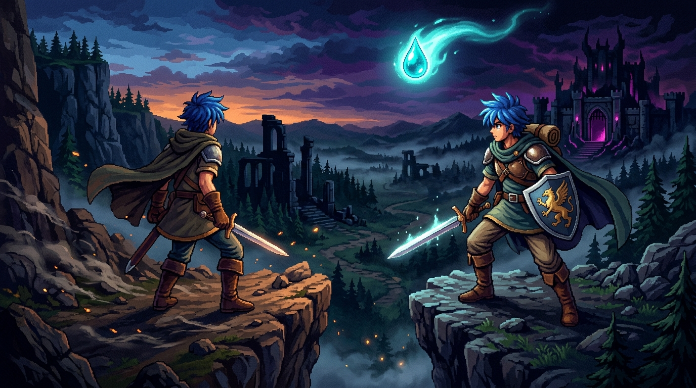
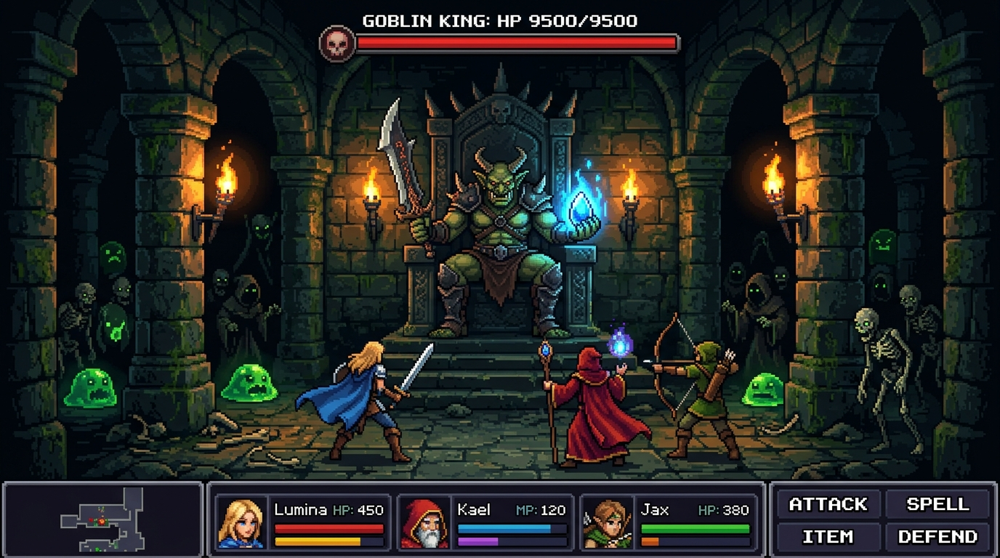
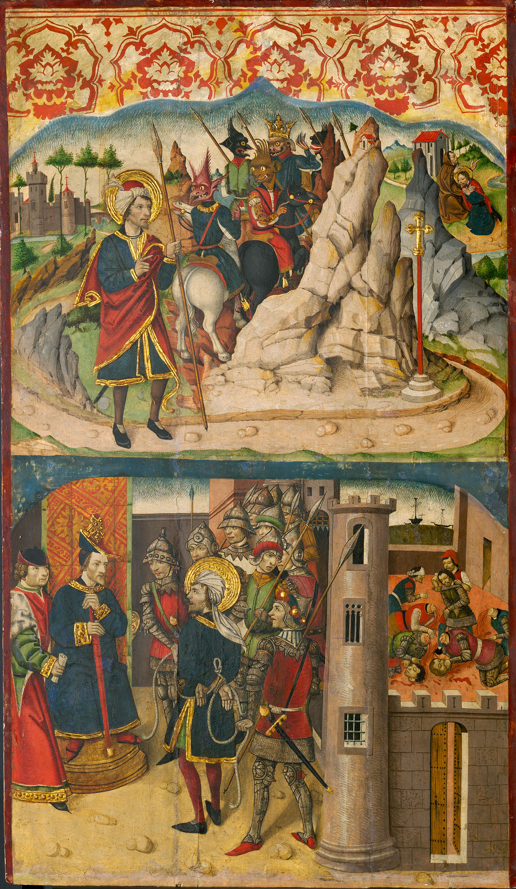
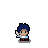
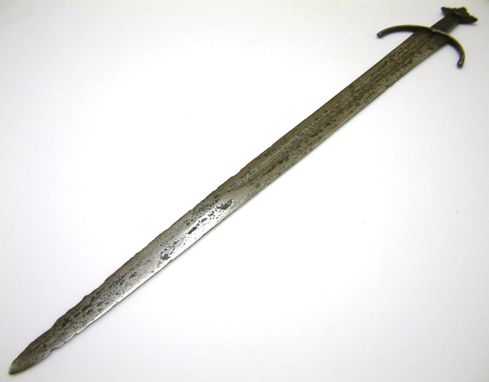
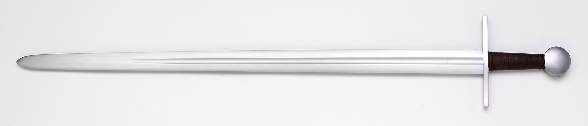
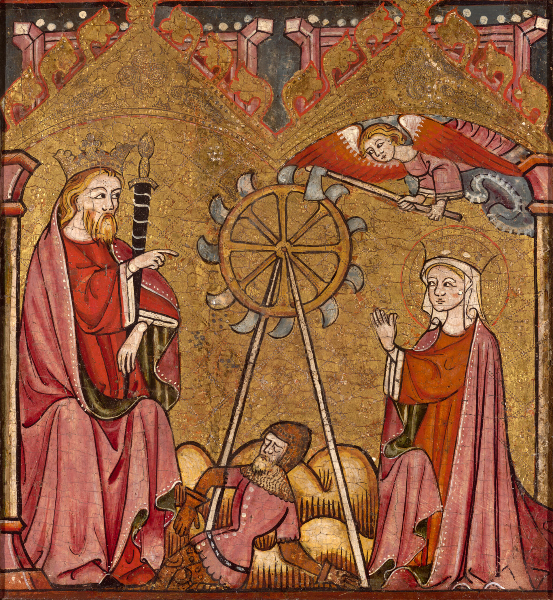

Lumina's Regret
Game 2D Action-RPG 16-bit klasik dalam Java SE 21 murni tanpa dependensi pihak ketiga. Mainkan langsung di peramban atau unduh biner desktop 60 FPS.

Peta Lembah Terkutuk
Pilih titik penanda pada perkamen kuno untuk mempelajari rahasia wilayah, rintangan alam, dan bahaya yang mengintai.
Desa Aethelard
Pemukiman awal tempat perlindungan warga terakhir. Sylvia sang pemandu roh tinggal di balai kuil untuk memberikan bimbingan pencarian relik dan penaklukan dungeon.

Konfrontasi Goblin King
Penguasa dungeon bawah tanah yang menguasai kekuatan sihir kuno. Pemain harus menguasai ritme tebasan, tangkisan perisai, dan pergerakan lincah untuk menundukkannya.
Fase Satu: Ayunan Bilah & Panggilan Bala Bantuan
Goblin King mendekat dengan ayunan pedang bergerigi jangkauan lebar sambil memanggil kawanan Slime dan Zombie untuk mengapit posisi pemain.
Fase Dua: Amukan Proyektil Sihir Melingkar
Saat daya tahan berkurang di bawah 50%, sang raja memicu ledakan amarah: meluncurkan proyektil sihir melingkar beruntun ke seluruh penjuru ruangan.
Gema Suara Lembah
Dengarkan aransemen musik tema latar (BGM) dan efek suara 16-bit asli langsung dari bank audio game.
Kutukan Lembah Suci
Kabut kegelapan telah menelan desa kuno. Monster merajalela di perbatasan hutan, dan jalan menuju kuil tertutup oleh rintangan pohon berduri.
Desa yang Sunyi
Temui Sylvia sang pemandu roh di balai desa untuk mempelajari misteri kapak pemotong rintangan dan lentera penembus kegelapan bawah tanah.
Boran Sang Pedagang
Tukarkan perunggu hasil perburuan dengan perisai besi, lentera gua, serta ransum pemulih stamina di gerbang barat sebelum menuruni tangga dungeon.
Goblin King di Ruang Bawah
Ruang terdalam Dark Dungeon dijaga oleh Goblin King. Waspadai amukan fase kedua saat darahnya menipis: tembakan proyektil sihir dan kawanan minion!

Katalog Karakter dan Monster
Pilih entitas untuk memeriksa rincian sprite, tingkah laku, dan perannya di dalam petualangan.

Sang Pahlawan
Karakter utama yang diberkahi kecepatan gerak, tebasan pedang, tembakan proyektil sihir, dan manuver dash menghindar.
Inspirasi Pedang dan Mitologi
Desain persenjataan dan atmosfer Lumina's Regret berakar pada peninggalan sejarah dan manuskrip abad pertengahan.

Pedang Cawood (1100 Masehi)
Bilah baja dengan ukiran Viking dan pelindung melengkung. Koleksi York Museums Trust (CC BY-SA 4.0).

Pedang Hospitaller
Bilah pedang dua tangan ksatria ordo salib. Koleksi Søren Niedziella (CC BY 2.0).

Lukisan Panel (1395 Masehi)
Seni tempera minyak Spanyol abad ke-14. Art Institute of Chicago (CC0 Domain Publik).
Sistem Kendali
Dukungan penuh navigasi keyboard universal dan interaksi mouse responsif.
| Aksi Permainan | Tombol Keyboard | Interaksi Mouse |
|---|---|---|
| Pergerakan Karakter | W A S D atau Panah Arah | Menghadap kursor saat serang/dash |
| Tebasan Pedang / Kapak | J atau Z | Klik kiri ke arah kursor / target |
| Tembakan Tebasan Sihir | K / X / F (1 Mana) | Membidik lurus ke hadapan |
| Tangkisan Perisai | L atau C (Tahan) | Menahan benturan dan menepis proyektil |
| Manuver Menghindar (Dash) | SPASI / SHIFT / Q | Klik kanan ke arah kursor |
| Bicara / Beli / Buka Peti | E atau ENTER | Klik kiri pada target |
| Buka Tas Inventori | TAB / B / I | Klik dan pilih slot tas |
| Menu Jeda / Pengaturan | P (Jeda) / ESC (Pengaturan) | Klik tombol antarmuka |
Java SE 21 Murni
Hanya menggunakan pustaka java.desktop dan java.base. Tanpa Maven, tanpa framework pihak ketiga, kompilasi 0 warning.
60 FPS Deterministik
Game loop delta timer presisi tinggi dengan primitive math AABB collision untuk meminimalkan beban garbage collector saat pertempuran intensif.
Fisika Wall-Sliding
Pemeriksaan tabrakan terpisah pada sumbu horizontal dan vertikal mencegah pemain tersangkut saat bergerak diagonal menyusuri tepian dinding gua.
Audio CC0 Terkurasi
Aransemen WAV 16-bit PCM terkurasi berganti otomatis antara Overworld, Dungeon, Boss Battle, dan Title Screen dengan tata suara retro klasik.
Rilis Biner Desktop
Ingin memainkan game secara lokal dengan performa 60.0 FPS murni dan latency nol di komputer Anda? Unduh rilis biner resmi LuminasRegret.jar.
java -jar LuminasRegret.jarMembutuhkan Java 21 LTS atau lebih baru terpasang di komputer Anda.